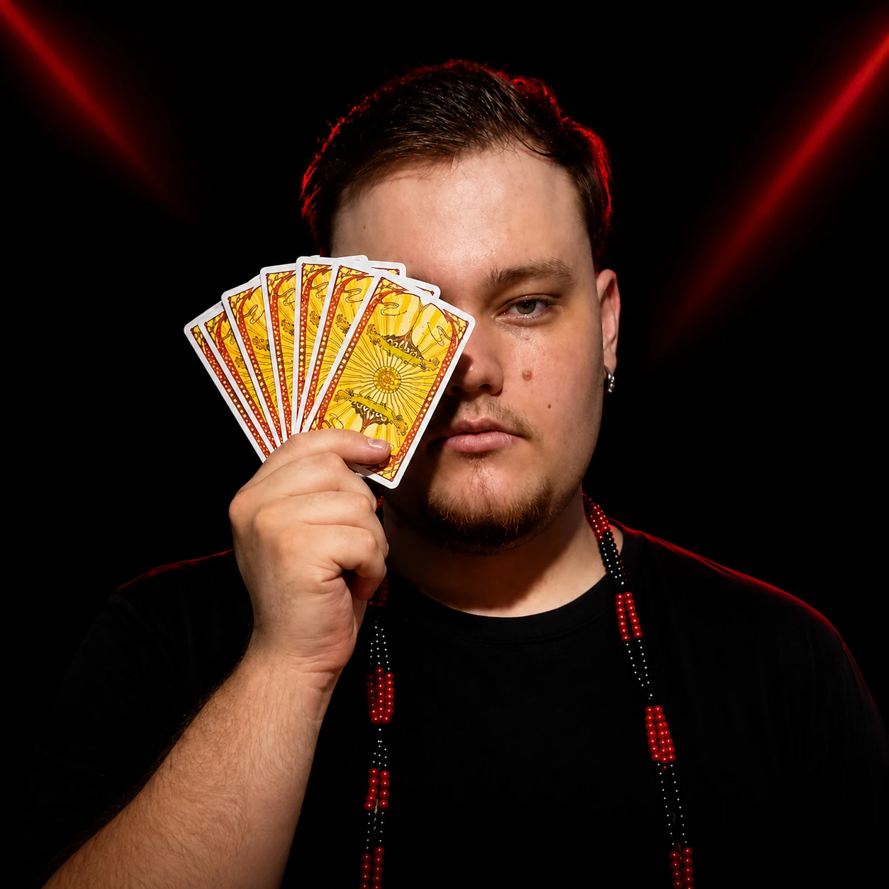
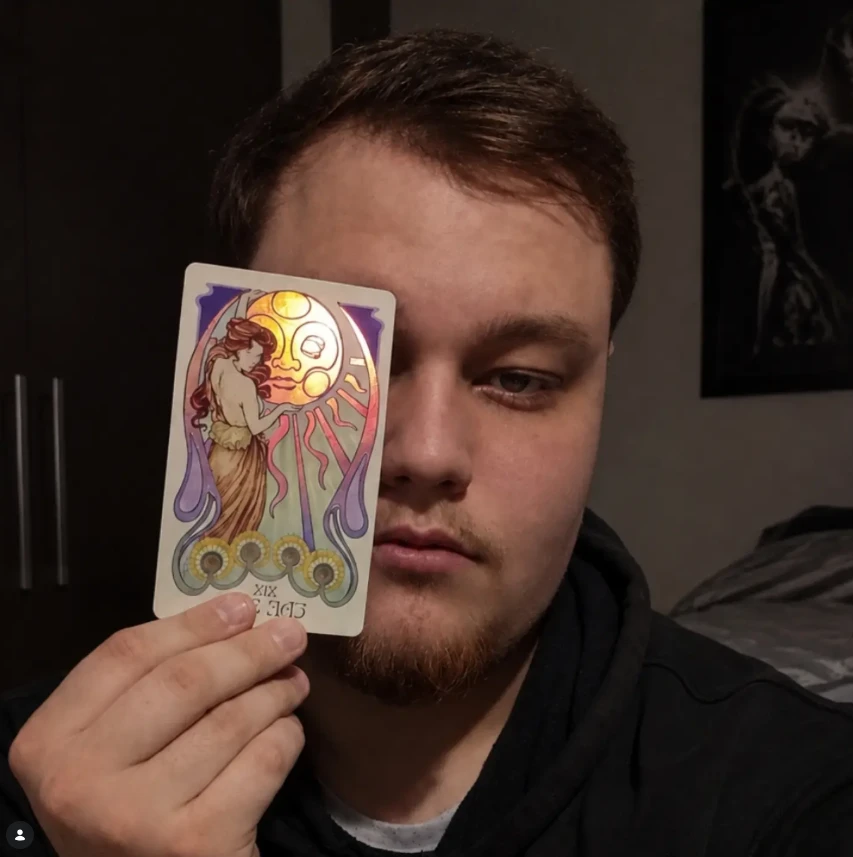

<title>Wireframes Gabriel da Padilha</title>
<meta name="claude:viewport-fit-sides" content="cover">
<link rel="preconnect" href="https://fonts.googleapis.com">
<link rel="preconnect" href="https://fonts.gstatic.com" crossorigin>
<link rel="stylesheet" href="https://fonts.googleapis.com/css2?family=Atkinson+Hyperlegible:wght@400;700&family=JetBrains+Mono:wght@400;600&family=Cormorant+Garamond:wght@600&display=swap">
<style>
/* Layout: prancheta de wireframe — cada bloco do site vira uma "folha" com o desenho à esquerda e as anotações (caneta vermelha) à direita */
:root {
  --paper: #f6f6f4;
  --sheet: #ffffff;
  --ink: #26262b;
  --ink-soft: #6b6b74;
  --line: #b9b9c0;
  --fill: #e7e7ea;
  --note: #c2185b;
  --note-bg: #fce8ef;
  --f-display: "Cormorant Garamond", Georgia, serif;
  --f-body: "Atkinson Hyperlegible", system-ui, sans-serif;
  --f-mono: "JetBrains Mono", ui-monospace, Menlo, monospace;
}
@media (prefers-color-scheme: dark) {
  :root:not([data-theme="light"]) {
    --paper: #141417; --sheet: #1c1c21; --ink: #ececf0; --ink-soft: #a0a0ab;
    --line: #4a4a54; --fill: #2a2a31; --note: #f06292; --note-bg: #3a1a27; color-scheme: dark;
  }
}
:root[data-theme="dark"] {
  --paper: #141417; --sheet: #1c1c21; --ink: #ececf0; --ink-soft: #a0a0ab;
  --line: #4a4a54; --fill: #2a2a31; --note: #f06292; --note-bg: #3a1a27; color-scheme: dark;
}

body { background: var(--paper); color: var(--ink); font-family: var(--f-body); font-size: 16px; line-height: 1.55; }
.wrap { max-width: 1180px; margin: 0 auto; padding-block: 40px 80px;
  padding-left: max(16px, env(safe-area-inset-left, 0px)); padding-right: max(16px, env(safe-area-inset-right, 0px));
  display: grid; gap: 40px; }
h1, h2, h3 { text-wrap: balance; margin: 0; }
p { margin: 0; }
.mono { font-family: var(--f-mono); font-size: 12px; letter-spacing: .04em; text-transform: uppercase; color: var(--ink-soft); }

/* Intro */
.intro { display: grid; gap: 16px; max-width: 72ch; }
.intro h1 { font-family: var(--f-display); font-size: clamp(34px, 5vw, 52px); line-height: 1.05; }
.intro p { color: var(--ink-soft); }
.flag { border-left: 3px solid var(--note); background: var(--note-bg); padding: 12px 16px; border-radius: 0 6px 6px 0; color: var(--ink); font-size: 15px; }

/* Mapa */
.map { display: grid; grid-template-columns: repeat(auto-fit, minmax(150px, 1fr)); gap: 8px; list-style: none; padding: 0; margin: 0; counter-reset: b; }
.map a { display: grid; gap: 2px; padding: 10px 12px; border: 1px solid var(--line); border-radius: 6px; background: var(--sheet); color: var(--ink); text-decoration: none; font-size: 14px; height: 100%; box-sizing: border-box; }
.map a:hover, .map a:focus-visible { border-color: var(--note); outline: none; }
.map .extra a { border-style: dashed; }

/* Folha de bloco */
.block { display: grid; grid-template-columns: minmax(0, 1fr) 320px; gap: 24px; align-items: start; scroll-margin-top: 16px; }
.block > header { grid-column: 1 / -1; display: flex; gap: 12px; align-items: baseline; flex-wrap: wrap; border-bottom: 1px solid var(--line); padding-bottom: 8px; }
.block > header h2 { font-family: var(--f-display); font-size: 30px; line-height: 1.1; }
.tag { font-family: var(--f-mono); font-size: 11px; text-transform: uppercase; letter-spacing: .05em; color: var(--note); border: 1px solid var(--note); border-radius: 99px; padding: 2px 8px; }
@media (max-width: 860px) { .block { grid-template-columns: minmax(0, 1fr); } }

/* Desenho do wireframe */
.wf { background: var(--sheet); border: 1.5px solid var(--ink); border-radius: 4px; padding: 28px; display: grid; gap: 16px; min-width: 0; }
.wf.thin { padding: 14px 20px; }
.row { display: flex; gap: 16px; align-items: center; flex-wrap: wrap; }
.between { justify-content: space-between; }
.center { text-align: center; justify-items: center; }
.grid2 { display: grid; grid-template-columns: repeat(2, minmax(0, 1fr)); gap: 20px; }
.grid3 { display: grid; grid-template-columns: repeat(3, minmax(0, 1fr)); gap: 14px; }
@media (max-width: 620px) { .grid2, .grid3 { grid-template-columns: minmax(0, 1fr); } .wf { padding: 18px; } }

.logo { font-family: var(--f-display); font-size: 20px; font-weight: 600; }
.logo small { display: block; font-family: var(--f-mono); font-size: 10px; letter-spacing: .08em; text-transform: uppercase; color: var(--ink-soft); font-weight: 400; }
.menu { display: flex; gap: 14px; flex-wrap: wrap; font-size: 14px; color: var(--ink-soft); }
.menu span { border-bottom: 1px dotted var(--line); }
.btn { display: inline-flex; align-items: center; gap: 8px; border: 1.5px solid var(--ink); border-radius: 99px; padding: 8px 18px; font-size: 14px; font-weight: 700; background: var(--sheet); white-space: normal; }
.btn.solid { background: var(--ink); color: var(--sheet); }
.btn::before { content: ""; width: 10px; height: 10px; border-radius: 50%; border: 1.5px solid currentColor; flex: none; }
.btn.noicon::before { display: none; }
.wf h3.t { font-family: var(--f-display); font-size: clamp(24px, 3.4vw, 36px); line-height: 1.15; max-width: 22ch; }
.wf .sub { color: var(--ink-soft); max-width: 58ch; font-size: 15px; }
.ph { position: relative; border: 1.5px solid var(--line); background:
  linear-gradient(to top right, transparent calc(50% - .75px), var(--line) 50%, transparent calc(50% + .75px)),
  linear-gradient(to top left, transparent calc(50% - .75px), var(--line) 50%, transparent calc(50% + .75px)), var(--fill);
  display: grid; place-items: center; max-width: 100%; }
.ph span { background: var(--sheet); font-family: var(--f-mono); font-size: 11px; text-transform: uppercase; letter-spacing: .05em; padding: 3px 8px; border: 1px solid var(--line); color: var(--ink-soft); text-align: center; }
.ph.video { aspect-ratio: 16 / 9; width: 100%; }
.ph.photo { aspect-ratio: 4 / 5; width: 100%; }
.ph.thumb { aspect-ratio: 16 / 9; width: 100%; }
.ph.bg { min-height: 0; }
.photo-real { width: 100%; aspect-ratio: 4 / 5; object-fit: cover; border: 1.5px solid var(--ink); display: block; max-width: 100%; }
.price { font-family: var(--f-display); font-size: 30px; font-weight: 600; line-height: 1; }
.price small { font-family: var(--f-mono); font-size: 11px; color: var(--ink-soft); font-weight: 400; letter-spacing: .04em; }
.ok { border-left: 3px solid var(--ink); background: var(--fill); padding: 12px 16px; border-radius: 0 6px 6px 0; font-size: 15px; }
.ok ul { margin: 6px 0 0; padding-left: 18px; display: grid; gap: 2px; }
.lines { display: grid; gap: 8px; }
.lines i { display: block; height: 8px; background: var(--fill); border-radius: 2px; }
.lines i:nth-child(3n) { width: 82%; } .lines i:nth-child(4n) { width: 64%; }

/* Cartas do tarot */
.deck { display: grid; grid-template-columns: repeat(2, minmax(0, 260px)); justify-content: center; gap: 28px; align-items: end; }
@media (max-width: 620px) { .deck { grid-template-columns: minmax(0, 300px); } .deck .card.feat { order: -1; } }
.card { position: relative; border: 1.5px solid var(--ink); border-radius: 14px; padding: 10px; background: var(--sheet); }
.card .in { border: 1px solid var(--line); border-radius: 9px; padding: 18px 16px; display: grid; gap: 10px; text-align: center; justify-items: center; }
.card.feat { transform: translateY(-14px); box-shadow: 0 0 0 4px var(--fill); }
.card .roman { font-family: var(--f-display); font-size: 22px; }
.card .sym { width: 56px; height: 56px; border-radius: 50%; border: 1.5px dashed var(--line); }
.card h4 { font-family: var(--f-display); font-size: 22px; margin: 0; line-height: 1.1; }
.card .meta { font-family: var(--f-mono); font-size: 11px; text-transform: uppercase; letter-spacing: .04em; color: var(--ink-soft); }
.card ul { list-style: none; padding: 0; margin: 0; text-align: left; font-size: 13px; display: grid; gap: 4px; width: 100%; }
.card li::before { content: "✦ "; color: var(--ink-soft); }
.card p { font-size: 13px; color: var(--ink-soft); }
.seal { position: absolute; top: -12px; left: 50%; transform: translateX(-50%); background: var(--ink); color: var(--sheet); font-family: var(--f-mono); font-size: 10px; text-transform: uppercase; letter-spacing: .06em; padding: 4px 10px; border-radius: 99px; white-space: nowrap; }

/* FAQ */
.acc { display: grid; gap: 0; border-top: 1px solid var(--line); width: 100%; max-width: 640px; text-align: left; }
.acc div { display: flex; justify-content: space-between; gap: 12px; border-bottom: 1px solid var(--line); padding: 12px 4px; font-weight: 700; font-size: 15px; }
.acc div::after { content: "+"; font-family: var(--f-mono); color: var(--ink-soft); }
.acc div.open { flex-wrap: wrap; }
.acc div.open::after { content: "–"; order: 1; }
.acc div.open p { order: 2; flex-basis: 100%; font-weight: 400; color: var(--ink-soft); font-size: 14px; }

/* Anotações */
.notes { display: grid; gap: 14px; font-size: 14px; min-width: 0; }
.notes section { display: grid; gap: 4px; }
.notes h5 { margin: 0; font-family: var(--f-mono); font-size: 11px; text-transform: uppercase; letter-spacing: .06em; color: var(--note); font-weight: 600; }
.notes ul { margin: 0; padding-left: 18px; display: grid; gap: 3px; }
.notes .flag { font-size: 13px; }
.pin { display: inline-grid; place-items: center; width: 18px; height: 18px; border-radius: 50%; background: var(--note); color: var(--sheet); font-family: var(--f-mono); font-size: 10px; font-weight: 600; vertical-align: middle; flex: none; }
.float { position: relative; }
.float .fab { position: absolute; right: 12px; bottom: 12px; width: 48px; height: 48px; border-radius: 50%; border: 1.5px solid var(--ink); background: var(--sheet); display: grid; place-items: center; font-family: var(--f-mono); font-size: 10px; }

.closing { display: grid; gap: 12px; max-width: 72ch; border-top: 1px solid var(--line); padding-top: 24px; }
.closing h2 { font-family: var(--f-display); font-size: 30px; }
.closing ol { margin: 0; padding-left: 20px; display: grid; gap: 6px; }
@media (prefers-reduced-motion: no-preference) { .map a { transition: border-color .15s; } }
</style>

<main class="wrap">

  <div class="intro">
    <p class="mono">Proposta de wireframes · site one-page</p>
    <h1>Gabriel da Padilha · Cartomancia &amp; Orientação</h1>
    <p>Estrutura de blocos a partir da copy enviada, na ordem em que aparecem na página. Cada bloco traz o desenho em baixa fidelidade e as anotações de objetivo, conteúdo, comportamento e versão mobile. Os blocos com borda tracejada no mapa foram sugeridos fora da copy e já aprovados.</p>
    <div class="ok"><strong>Versão 2 · decisões aplicadas</strong>
      <ul>
        <li>Site de agendamento de cartomancia (copy confirmada).</li>
        <li>Preços nas cartas: 30 minutos por R$ 80 e 1 hora por R$ 140.</li>
        <li>Tratamento padronizado em "você", inclusive na bio.</li>
        <li>Faixa de 3 passos, CTA final, rodapé e botão flutuante aprovados.</li>
        <li>Fotos reais do Gabriel no hero e no Sobre.</li>
      </ul>
    </div>
  </div>

  <ol class="map" aria-label="Mapa de blocos">
    <li><a href="#b1"><span class="mono">Bloco 1</span>Cabeçalho &amp; menu</a></li>
    <li><a href="#b2"><span class="mono">Bloco 2</span>Hero</a></li>
    <li><a href="#b3"><span class="mono">Bloco 3</span>Consultas (cartas)</a></li>
    <li><a href="#b4"><span class="mono">Bloco 4</span>Como funciona (vídeo)</a></li>
    <li><a href="#b5"><span class="mono">Bloco 5</span>Sobre</a></li>
    <li><a href="#b6"><span class="mono">Bloco 6</span>YouTube</a></li>
    <li><a href="#b7"><span class="mono">Bloco 7</span>Perguntas frequentes</a></li>
    <li class="extra"><a href="#b8"><span class="mono">Bloco 8</span>CTA final + rodapé</a></li>
    <li class="extra"><a href="#b9"><span class="mono">Fixo</span>Botão WhatsApp</a></li>
  </ol>

  <!-- 1 -->
  <article class="block" id="b1">
    <header><span class="mono">Bloco 1</span><h2>Cabeçalho &amp; menu</h2><span class="tag">fixo no topo</span></header>
    <div class="wf thin">
      <div class="row between">
        <div class="logo">Gabriel da Padilha<small>Cartomancia &amp; Orientação</small></div>
        <nav class="menu"><span>Início</span><span>Consultas</span><span>Como Funciona</span><span>Sobre Mim</span><span>YouTube</span><span>Dúvidas</span></nav>
        <span class="btn solid">Agendar no WhatsApp</span>
      </div>
    </div>
    <aside class="notes">
      <section><h5>Objetivo</h5><p>Orientar a navegação e deixar o agendamento sempre a um clique.</p></section>
      <section><h5>Comportamento</h5><ul><li>Header fica fixo e ganha fundo sólido ao rolar.</li><li>Cada link rola até a seção (âncoras).</li><li>Item do menu ativo muda conforme a seção visível.</li></ul></section>
      <section><h5>Mobile</h5><p>Logo + ícone de menu (hambúrguer). O botão do WhatsApp sai do header e vira o botão flutuante.</p></section>
      <p class="flag">Troquei a ordem para <strong>Sobre Mim</strong> antes de <strong>YouTube</strong>, igual à ordem das seções na página. Na copy o menu estava invertido.</p>
    </aside>
  </article>

  <!-- 2 -->
  <article class="block" id="b2">
    <header><span class="mono">Bloco 2</span><h2>Hero</h2><span class="tag">primeira dobra</span></header>
    <div class="wf grid2" style="align-items:center">
      <div style="display:grid;gap:16px;justify-items:start">
        <p class="mono">Atendimento por videochamada</p>
        <h3 class="t">Clareza, direcionamento e verdade para transformar a sua realidade.</h3>
        <p class="sub">Atendimentos místicos e aprofundados via videochamada. Um espaço seguro e individualizado, focado em resolver a sua dor pela raiz.</p>
        <div class="row"><span class="btn solid noicon">Ver Modalidades de Consulta ↓</span></div>
      </div>
      
    </div>
    <aside class="notes">
      <section><h5>Objetivo</h5><p>Em 5 segundos a pessoa entende o que é, como funciona (videochamada) e para onde ir.</p></section>
      <section><h5>Conteúdo</h5><ul><li>Rótulo curto acima do título (sugestão).</li><li>Título, subtítulo e CTA da copy.</li><li>Foto de estúdio (fundo preto, luz vermelha, cartas douradas). É a imagem mais forte e abre o site.</li></ul></section>
      <section><h5>Comportamento</h5><p>O CTA rola até o Bloco 3. Altura definida pelo conteúdo, sem ocupar a tela inteira, para a primeira carta já aparecer no fim da dobra.</p></section>
      <section><h5>Mobile</h5><p>Texto primeiro, foto abaixo (ou como fundo com sobreposição escura).</p></section>
      <section><h5>Direção visual</h5><p>As fotos já sugerem a paleta do layout final: preto profundo, vermelho e o dourado das cartas.</p></section>
    </aside>
  </article>

  <!-- 3 -->
  <article class="block" id="b3">
    <header><span class="mono">Bloco 3</span><h2>Consultas: as cartas do tarot</h2><span class="tag">bloco de conversão</span></header>
    <div class="wf center">
      <h3 class="t">Sintonize a Sua Consulta</h3>
      <p class="sub">Escolha o tempo ideal para investigarmos os seus caminhos. Todas as sessões são realizadas ao vivo por videochamada.</p>
      <div class="deck" style="margin-top:20px">
        <div class="card">
          <div class="in">
            <span class="roman">I</span>
            <span class="sym" aria-hidden="true"></span>
            <h4>Sessão Imersiva</h4>
            <span class="meta">30 min · Individual · Videochamada</span>
            <span class="price">R$ 80 <small>/ sessão</small></span>
            <p>Ideal para quem busca clareza imediata e direcionamento focado em questões pontuais.</p>
            <ul><li>30 minutos de conversa ao vivo</li><li>Perguntas ilimitadas dentro do tempo</li><li>Gravação da tiragem</li></ul>
            <span class="btn">Agendar 30 Minutos no WhatsApp</span>
          </div>
        </div>
        <div class="card feat">
          <span class="seal">Mais recomendado</span>
          <div class="in">
            <span class="roman">II</span>
            <span class="sym" aria-hidden="true"></span>
            <h4>Jornada Completa</h4>
            <span class="meta">1 hora · Profundo · Videochamada</span>
            <span class="price">R$ 140 <small>/ sessão</small></span>
            <p>Uma leitura abrangente para mapear amor, trabalho, finanças e caminhos espirituais com calma e profundidade.</p>
            <ul><li>60 minutos de imersão ao vivo</li><li>Perguntas ilimitadas dentro do tempo</li><li>Análise detalhada de causa e solução</li><li>Gravação da tiragem</li></ul>
            <span class="btn solid">Agendar 1 Hora no WhatsApp</span>
          </div>
        </div>
      </div>
    </div>
    <aside class="notes">
      <section><h5>Objetivo</h5><p>Escolher a modalidade e ir para o WhatsApp. É o bloco mais importante da página.</p></section>
      <section><h5>Interação das cartas</h5><ul><li><span class="pin">1</span> Ao entrar na tela, as cartas aparecem viradas e giram para a frente, uma depois da outra.</li><li><span class="pin">2</span> No hover a carta sobe e ganha brilho na moldura.</li><li><span class="pin">3</span> Preço, itens e botão ficam sempre na frente da carta. Não esconder o CTA atrás de um "virar".</li></ul></section>
      <section><h5>Destaque</h5><p>Carta II maior/elevada, com selo e botão preenchido. Carta I com botão contornado.</p></section>
      <section><h5>Mobile</h5><p>Cartas empilhadas, com a Jornada Completa primeiro. Alternativa: carrossel com deslize lateral.</p></section>
      <section><h5>Botões</h5><p>Cada botão abre o WhatsApp com mensagem pronta, ex.: "Olá Gabriel, quero agendar a Jornada Completa (1 hora)".</p></section>
      <section><h5>Preço</h5><p>Valor em destaque logo abaixo do nome, antes da descrição. Pagamento via Pix, combinado no WhatsApp.</p></section>
    </aside>
  </article>

  <!-- 4 -->
  <article class="block" id="b4">
    <header><span class="mono">Bloco 4</span><h2>Como funciona o atendimento</h2><span class="tag">vídeo</span></header>
    <div class="wf center">
      <h3 class="t">Como Funciona o Meu Atendimento</h3>
      <p class="sub">Assista ao vídeo abaixo para entender como nos conectamos durante a videochamada e o que esperar da sua consulta.</p>
      <div class="ph video" style="max-width:720px"><span>▶ Player do YouTube (16:9)</span></div>
      <div class="grid3" style="width:100%;max-width:720px;text-align:left">
        <div><p class="mono">Passo 1</p><p>Escolha a modalidade e chame no WhatsApp</p></div>
        <div><p class="mono">Passo 2</p><p>Confirme dia, horário e pagamento via Pix</p></div>
        <div><p class="mono">Passo 3</p><p>Entre no Google Meet na hora marcada</p></div>
      </div>
    </div>
    <aside class="notes">
      <section><h5>Objetivo</h5><p>Tirar o medo do desconhecido: mostrar como é a chamada antes de agendar.</p></section>
      <section><h5>Comportamento</h5><p>Mostrar uma capa (thumbnail + botão play) e só carregar o player do YouTube no clique. A página fica mais leve.</p></section>
      <section><h5>Sugestão</h5><p>Faixa de 3 passos abaixo do vídeo, com textos tirados do FAQ. Ajuda quem não vai dar play.</p></section>
      <section><h5>Mobile</h5><p>Vídeo em largura total; passos empilhados.</p></section>
    </aside>
  </article>

  <!-- 5 -->
  <article class="block" id="b5">
    <header><span class="mono">Bloco 5</span><h2>Sobre Gabriel da Padilha</h2><span class="tag">autoridade</span></header>
    <div class="wf grid2" style="align-items:center">
      
      <div style="display:grid;gap:14px">
        <p class="mono">Sobre mim</p>
        <h3 class="t">Quem é Gabriel da Padilha</h3>
        <p class="sub">Há dois anos dedicado à leitura de cartas e oráculos, o meu trabalho é focado em trazer clareza, verdade e direcionamento estratégico…</p>
        <div class="lines"><i></i><i></i><i></i><i></i><i></i></div>
        <p style="font-family:var(--f-display);font-size:22px;line-height:1.25;border-left:2px solid var(--ink);padding-left:12px">"Um atendimento profundamente humano, acolhedor e sem julgamentos."</p>
      </div>
    </div>
    <aside class="notes">
      <section><h5>Objetivo</h5><p>Criar conexão pessoal e confiança antes da decisão.</p></section>
      <section><h5>Conteúdo</h5><ul><li>Bio completa da copy em 2 parágrafos.</li><li>Uma frase da bio em destaque (citação).</li><li>Opcional: 3 marcadores curtos (2 anos de prática · Atendimento online · Sem julgamentos).</li></ul></section>
      <section><h5>Mobile</h5><p>Foto acima, texto abaixo.</p></section>
      <section><h5>Bio ajustada para "você"</h5><p>"…mostrando que <strong>você tem</strong> o poder de transformar a <strong>sua</strong> própria realidade quando <strong>enxerga</strong> as coisas com clareza."</p></section>
      <section><h5>Foto</h5><p>Foto mais pessoal, com a carta O Sol. Complementa a de estúdio do hero sem repetir.</p></section>
    </aside>
  </article>

  <!-- 6 -->
  <article class="block" id="b6">
    <header><span class="mono">Bloco 6</span><h2>Conteúdo &amp; YouTube</h2><span class="tag">relacionamento</span></header>
    <div class="wf">
      <div class="row between">
        <div style="display:grid;gap:10px;min-width:0;flex:1 1 320px">
          <h3 class="t">Transmissões &amp; Ensinamentos Espirituais</h3>
          <p class="sub">Acompanhe meus vídeos no YouTube para tiragens coletivas, orientações da espiritualidade e reflexões.</p>
        </div>
        <span class="btn">Inscrever-se no Canal</span>
      </div>
      <div class="grid3">
        <div style="display:grid;gap:6px"><div class="ph thumb"><span>Vídeo recente</span></div><div class="lines"><i></i><i></i></div></div>
        <div style="display:grid;gap:6px"><div class="ph thumb"><span>Vídeo recente</span></div><div class="lines"><i></i><i></i></div></div>
        <div style="display:grid;gap:6px"><div class="ph thumb"><span>Vídeo recente</span></div><div class="lines"><i></i><i></i></div></div>
      </div>
    </div>
    <aside class="notes">
      <section><h5>Objetivo</h5><p>Levar quem ainda não está pronto para agendar para o canal, e manter o contato.</p></section>
      <section><h5>Conteúdo</h5><p>3 miniaturas de vídeos (tiragens coletivas, por exemplo) com link para o YouTube. Podem ser fixas ou atualizadas à mão.</p></section>
      <section><h5>Mobile</h5><p>Miniaturas em carrossel horizontal; botão de inscrição em largura total.</p></section>
    </aside>
  </article>

  <!-- 7 -->
  <article class="block" id="b7">
    <header><span class="mono">Bloco 7</span><h2>Perguntas frequentes</h2><span class="tag">quebra de objeções</span></header>
    <div class="wf center">
      <h3 class="t">Perguntas Frequentes</h3>
      <div class="acc">
        <div class="open">Como é realizada a consulta?<p>Todas as consultas são realizadas ao vivo por videochamada (Google Meet). No horário agendado, entramos na chamada e fazemos a leitura em tempo real.</p></div>
        <div>Existe limite de perguntas durante a sessão?</div>
        <div>Como faço para agendar e pagar?</div>
        <div>O que preciso preparar para o dia do atendimento?</div>
      </div>
      <p class="sub" style="margin-top:8px">Ainda tem dúvida? <u>Fale comigo no WhatsApp</u></p>
    </div>
    <aside class="notes">
      <section><h5>Objetivo</h5><p>Responder as últimas dúvidas antes do agendamento.</p></section>
      <section><h5>Comportamento</h5><ul><li>Acordeão: a primeira pergunta abre por padrão, as outras fechadas.</li><li>Abrir uma não fecha as outras.</li></ul></section>
      <section><h5>Sugestão</h5><p>Linha "Ainda tem dúvida?" com link para o WhatsApp no fim do bloco.</p></section>
    </aside>
  </article>

  <!-- 8 -->
  <article class="block" id="b8">
    <header><span class="mono">Bloco 8</span><h2>CTA final + rodapé</h2><span class="tag">aprovado</span></header>
    <div class="wf">
      <div class="wf center" style="border-style:dashed">
        <h3 class="t">Pronta(o) para enxergar o seu caminho com clareza?</h3>
        <div class="row" style="justify-content:center"><span class="btn">Sessão 30 min</span><span class="btn solid">Jornada 1 hora</span></div>
      </div>
      <div class="row between" style="border-top:1px solid var(--line);padding-top:16px;align-items:start">
        <div class="logo">Gabriel da Padilha<small>Cartomancia &amp; Orientação</small></div>
        <nav class="menu"><span>Consultas</span><span>Como Funciona</span><span>Sobre Mim</span><span>Dúvidas</span></nav>
        <div class="menu"><span>WhatsApp</span><span>YouTube</span><span>Instagram</span></div>
      </div>
      <div class="lines" style="max-width:560px"><i></i></div>
      <p class="mono" style="text-transform:none">Aviso legal · © 2026 Gabriel da Padilha</p>
    </div>
    <aside class="notes">
      <section><h5>Objetivo</h5><p>Dar uma última chance de conversão para quem rolou a página toda.</p></section>
      <section><h5>Conteúdo sugerido</h5><ul><li>Frase curta de fechamento (precisa de copy).</li><li>Os dois botões de agendamento.</li><li>Rodapé com logo, links, redes e contato.</li><li>Aviso legal: as leituras não substituem acompanhamento médico, psicológico ou jurídico.</li></ul></section>
    </aside>
  </article>

  <!-- fixo -->
  <article class="block" id="b9">
    <header><span class="mono">Elemento fixo</span><h2>Botão flutuante do WhatsApp</h2><span class="tag">aprovado</span></header>
    <div class="wf float" style="min-height:160px">
      <div class="lines"><i></i><i></i><i></i><i></i><i></i></div>
      <div class="fab">WA</div>
    </div>
    <aside class="notes">
      <section><h5>Objetivo</h5><p>Manter o agendamento sempre visível, principalmente no celular, onde o botão do header some.</p></section>
      <section><h5>Comportamento</h5><p>Aparece depois do hero; abre o WhatsApp com mensagem genérica ("Olá Gabriel, quero agendar uma consulta").</p></section>
    </aside>
  </article>

  <div class="closing">
    <h2>O que falta para o layout final</h2>
    <ol>
      <li>Número do WhatsApp usado nos botões.</li>
      <li>Link do vídeo explicativo (Bloco 4) e do canal do YouTube (Bloco 6).</li>
      <li>Frase de fechamento do CTA final (Bloco 8). No wireframe está como rascunho.</li>
      <li>Links das redes para o rodapé (Instagram e outras, se houver).</li>
    </ol>
  </div>

</main>
